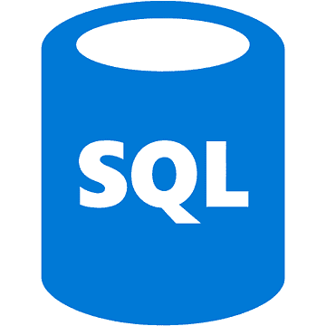
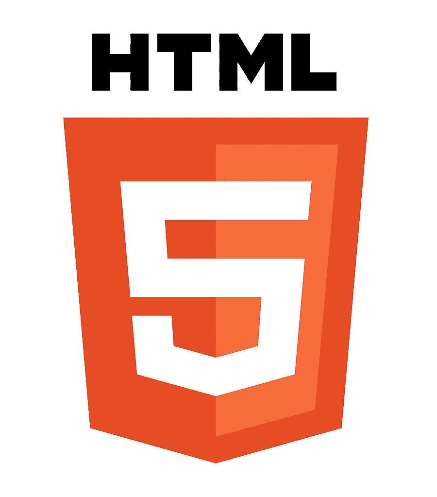
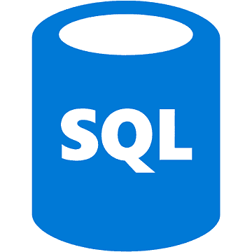
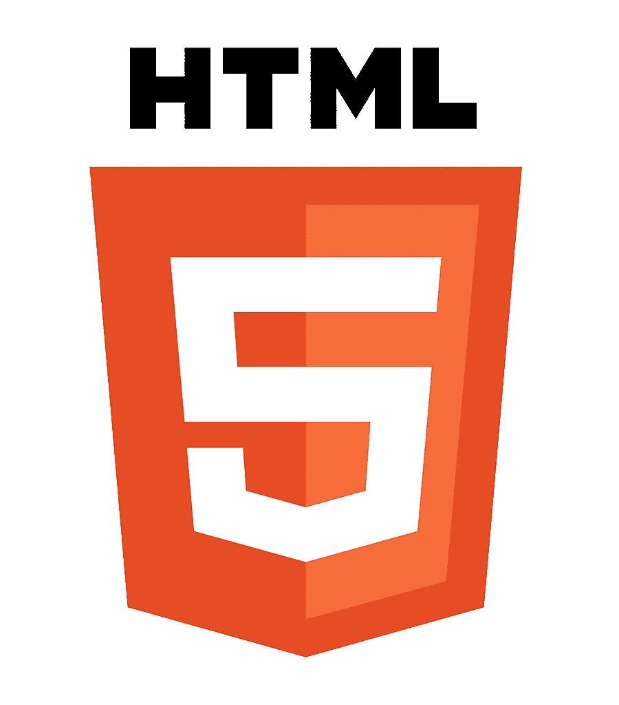

Daniel Morawski
Jestem studentem Politechniki Warszawskiej Filii w Płocku, na kierunku Przemysłowe Zastosowanie Informatyki. Zawsze dąże do uzyskania oczekiwanych efektów oraz chetnie pomagam innym.

Co portafię?
Języki komputerowe
 




- Tworzenie stron internetowych
- Pisanie prostych programów w języku Python
- Działania na bazach danych
Edukacja
Jestem absolwentem technikum infomatycznego ZSKZ Sochaczew gdzie zdobyłem tytuł zawodowy Technik
Informatyk
Aktualnie studiuje na Politechnice Warszawskiej
Certyfikaty
- PCAP: Programming Essentials in Python
- CCNAv7: Wprowadzenie do sieci
- CCNAv7: Podstawy przełączania, routingu i łączności bezprzewodowej
- Dyplom Technik Informatyk
Projekty
Wszystkie moje projekty sa umieszczane na moim Githubie

Kontakt
Jestem dostępny na praktycnzie kazdym komunikatorze. Mozesz napisac na messangerze a odpisze w ciagu 24 godzin.